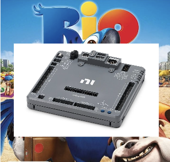
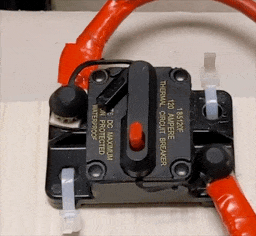

work in progress!
This is a guide for the full systems of the robot. Hopefully you’ll learn something, no matter what subteam you’re on! The expandable explanations are created using :nutshell

The robot is controlled by the RoboRIO, which acts as the central brain, processing inputs from drivers and sensors. During a match, it will execute our code to command subsystems like the drivetrain, intake, and shooter.
A 12v lead-acid battery powers all components on the robot. It’s important that we use a battery in :good condition and secure the wiring, because any voltage drops can cause performace issues or even reboot the RoboRIO (very bad!)
The battery connects to the :PDH/PDP with a breaker in between. The :breaker is the on/off switch of the robot. Turn it on by pressing the lever in, off by pressing the red button.

The :PDH/PDP distrubutes power throughout the robot. Each motor connects to one of a channels in the PDH/PDP with thick red and black :wires. Each of those channels has a fuse, so if there is a surge of power the fuse will pop instead of it damaging a motor.
Some robot components require much less power than the :motors. The :MPM provides channels for low power devices. One MPM channel can often power multiple devices. Devices that connect to the MPM include :beam breaks, :N100s, :CANcoders, and the :Pigeon.
Note that things are slightly different for the PDP 2.0.
Also, the :radio is powered a little differently, utilizing :POE

The roboRIO mainly has four ways of communication: CAN, PWM, DIO, and ethernet.
The most important one is the CAN bus. It’s a two-wire comminication system that connects devices in a daisy chain. The :Pigeon, :CANdle, :CANcoders, and :motor controllers are connected with cam. Each device has a unique ID, which we keep track of on a spreadsheet. [:more info]
:DIO ports are used to send simple on/off signals. DIO is great for small sensors like limit switches and :beam breaks.
:PWM is used to control :servos or older motor controllers. We would only use it when a device doesn’t support CAN, since CAN is bi-directional and can send much more data.
We’ll talk about ethernet in the next section!

The robot’s network is built around the radio. It creates a private network for the robot under the team’s :IP range and connects to the field management system (FMS) during matches.
The radio connects to the RoboRIO and N100s via ethernet, allowing them to transmit data to each other. The cameras are connected and powered by the N100, which processes image data and sends it to the RoboRIO.
During a match, the radio connects to the :driver station over wifi, but in the pits the robot can be tethered directly with a ethernet cable (“radio” is a bit misleading lol).
:heres how the match network works ## :What is the code actually doing during a match? Our robots code is command-based. Its based around two core :abstractions: Subsystems and Commands

Commands represent actions the robot can take
camera camera camera
email to someone to create a PO
radio radio radio
drivity drive drive drive
rio rio rio
Power Distrubution Hub / Power Distrubution Port
The PDP 1.0, PDH, and PDP 2.0 have the same purpose of distrubuting power, but they have significant differences!
*video of someone turing the robot on and off
This is complicated.

The gyroscope of the robot. This has to be in the very center of the robot!
A device to control light strips. It revieves data through CAM

CAN + encoder = cancoder
An encoder measures the rotation of a shaft. The CAN part means it transmits this data over the CAN bus


An intel computer. They are powered by a :buck-boost converter
We have a spreadsheet to keep track of this
The CAN starts at the roboRIO and ends at the PDP because the CAN network is required to be terminated by 120 Ω resistors and these are built into these two devices.
Digital Input Output.
There are three wires: red, white and black. The red wire is usually 5v, the black wire is 0v, and the white wire is in between that. The white wire measures the tou
Mini Power Module also known as a :MPM. it has a :fuse
FRC has a pretty good explanation of how IP works :here
Motors used to be so much complicated lol. now we just krakens becasue they COOK
Kraken and Falcon motors have build in motor controlers to the back, Talon FX.
other teams might have external motor controlers, such as SPARK MAX
nora can you write this? :)
Abstraction is the concept of hiding complex implementation details and exposing only the necessary parts of a system through a simplified interface. In FRC, abstraction lets you control a robot mechanism using simple commands without needing to directly manage motor speeds, sensor readings, or hardware configurations each time.
In our code you might see something like
superstructureIO.stop()
The superstructure is an abstraction. (ok the class structure is actually :so much more complicated)
We use a battery beak to measure the voltage of each battery. However, info it gives is not the most useful. :This conference gives a bit of an explanation why. This system may be changed in the future.
The 10.x.x.x is a private network, so it can’t be found on the internet
Power Over Ethernet